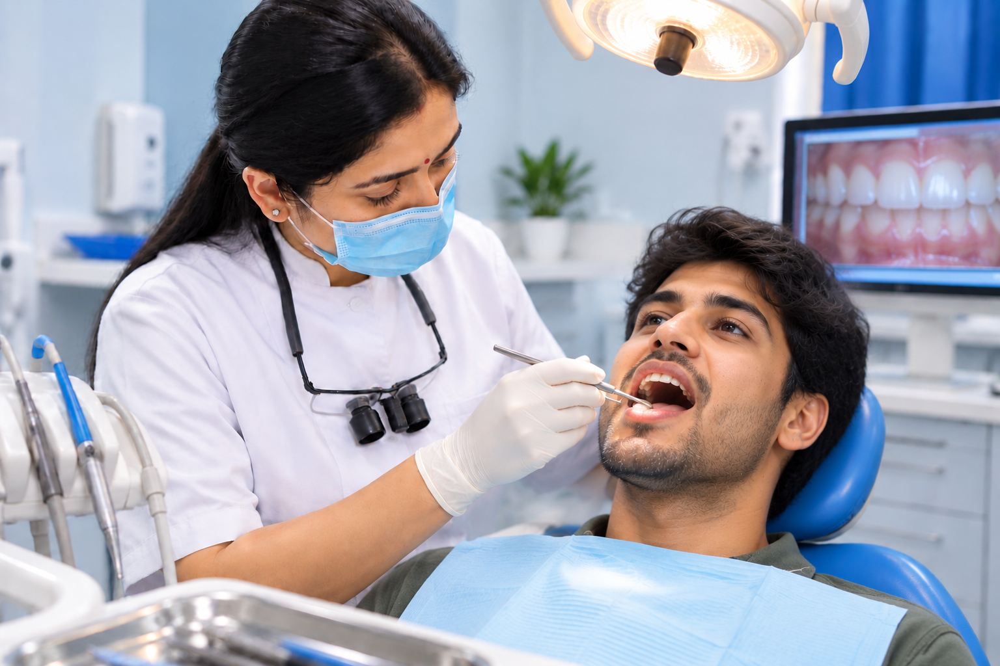

Healthy teeth start with prevention.
Good dental care isn't only about fixing problems. It's about preventing them.
Small, regular steps can help protect your teeth and gums and keep your smile healthy for longer.


IN SIMPLE WORDS
What is preventive dental care?
Preventive care means looking after your teeth and gums before a problem becomes painful or difficult to manage.
It combines regular dental check-ups with everyday habits and treatments that can help reduce the risk of dental disease.
The goal is simple: keep your natural teeth healthy for as long as possible.
WHAT DOES PREVENTIVE CARE INCLUDE?
A few simple things can make a big difference.
Preventive care is personalised. Your needs may be different depending on your age, dental history and everyday habits.
Regular check-ups
Routine examinations help identify changes in your teeth and gums before they become bigger problems.
Professional cleaning
Cleaning can help remove plaque and hardened deposits that are difficult to remove with routine brushing.
Fluoride protection
Fluoride can help strengthen teeth and reduce the risk of tooth decay when appropriate.
Oral hygiene guidance
We can help you understand how to brush, clean between your teeth and look after your mouth effectively.
Diet & habit advice
Everyday food and drink choices can affect your teeth. We discuss practical changes that fit your routine.
Early detection
Finding a problem early may give you more options for managing it and protecting your natural teeth.
YOUR EVERYDAY ROUTINE
The most important preventive care happens at home.
Your daily routine is a major part of keeping your mouth healthy. Small habits, repeated consistently, matter.
Brush regularly
Clean your teeth thoroughly with a fluoride toothpaste and a suitable toothbrush.
Clean between teeth
Brushing alone cannot clean every surface. Interdental cleaning helps reach those spaces.
Watch frequent snacking
Frequent exposure to sugary foods and drinks can increase the risk of decay.
Don't ignore changes
Pain, bleeding, sensitivity or a visible change is a reason to get your mouth checked.
PREVENTION CHANGES WITH YOU
Your dental needs aren't the same at every stage of life.
Preventive care can be adapted to your age, dental history, lifestyle and individual risk factors.
Children
Building good habits early and protecting developing teeth can help establish lifelong oral health.
Teenagers
Changing routines, orthodontic treatment and diet can make personalised guidance especially useful.
Adults
Regular monitoring can help manage decay, gum health, existing restorations and everyday wear.
Older adults
Preventive care can focus on maintaining function, natural teeth and oral comfort over time.
OUR APPROACH
Prevention should fit your life, not make it complicated.
Understand your risk
We look at your dental history, current oral health and everyday habits.
Focus on what matters
We identify the areas where a small change could make the biggest difference.
Make a practical plan
We explain what you can do at home and which professional preventive measures may be useful.
Review over time
Regular visits help us see how things are changing and adjust your care when needed.
YOU MAY BE WONDERING
Preventive care questions, answered simply.
There is no single schedule that suits everyone. The right interval depends on your oral health, history and individual risk, so your dentist can recommend a suitable review schedule.
Daily brushing is essential, but some deposits can still build up in areas that are difficult to clean. Whether professional cleaning is needed depends on your individual oral health.
Good preventive habits can reduce the risk of tooth decay, although no approach can guarantee that cavities will never occur.
A lack of symptoms does not always mean everything is healthy. Routine assessment can help identify changes that you may not notice yourself.
A consistent daily oral hygiene routine, along with sensible food and drink habits and regular dental reviews, forms the foundation of preventive care.
KEEP YOUR SMILE HEALTHY
Prevention starts with one simple step.
Book a check-up and find out what your teeth and gums need to stay healthy.